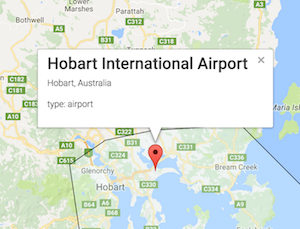

Welcome to Termini.
Use the map tools to select places on the map to find major airports, ports and train stations around the world.
You will need to login using the Google 'Sign In' button to use this app.
Data in this application was sourced from Open Flights which is licensed under the Database Contents License.
Discliamer: accuracy of this data is not guaranteed.
Please sign in to use Termini